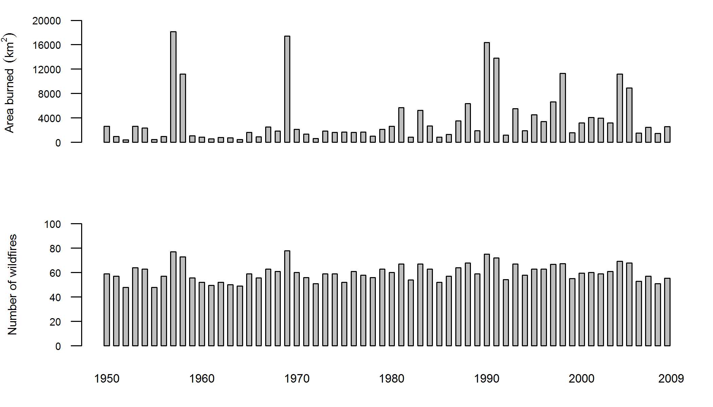
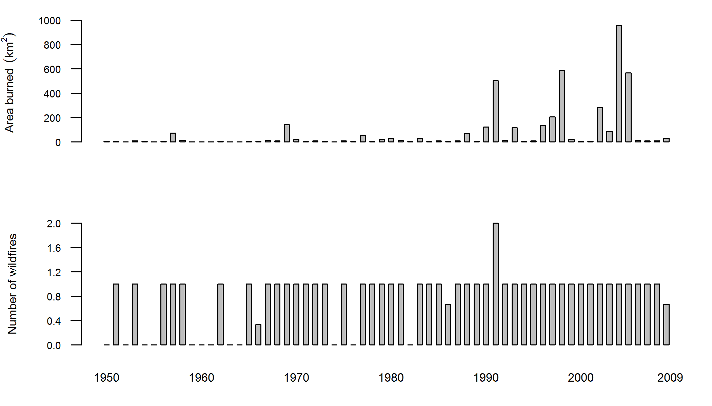
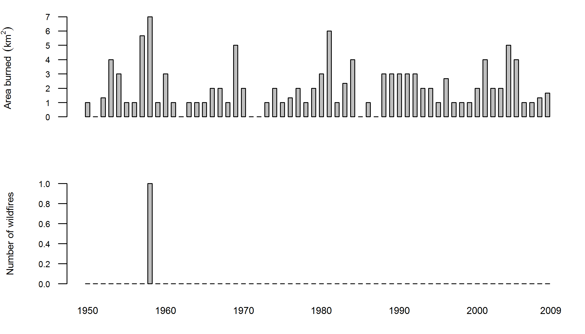
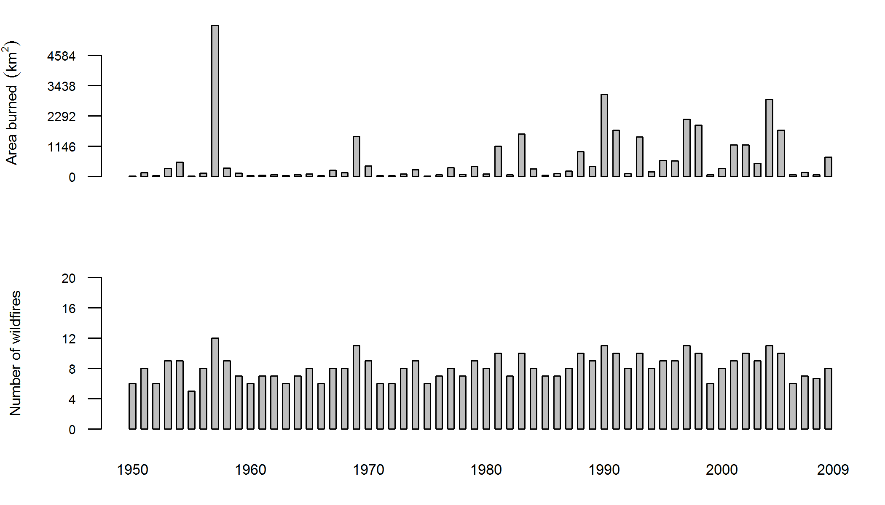

Baseline Fire 1950 - 2009 \ Unvetted preliminary rush draft from developmental code
Matthew Leonawicz
Baseline Fire Tables
The third table down combining the first two relates to table 3.1 in the original document. This uses strictly ALFRESCO output.
Fire frequency (fires/year)
| Arctic | North Pacific | Northwest Interior Forest North | Northwest Interior Forest South | Western Alaska | Alaska | |
|---|---|---|---|---|---|---|
| Mean | 0.9 | 0.1 | 43.5 | 9.5 | 8.1 | 59.9 |
| Standard deviation | 0.3 | 0.2 | 4.9 | 2.0 | 1.6 | 7.1 |
| Minimum | 0.0 | 0.0 | 35.0 | 6.0 | 5.0 | 48.3 |
| Median | 1.0 | 0.0 | 43.2 | 9.0 | 8.0 | 59.3 |
| 95th quantile | 1.0 | 0.7 | 52.4 | 13.3 | 10.7 | 72.8 |
| Maximum | 2.0 | 1.0 | 56.7 | 14.3 | 12.3 | 77.7 |
Burn area (km^2/year)
| Arctic | North Pacific | Northwest Interior Forest North | Northwest Interior Forest South | Western Alaska | Alaska | |
|---|---|---|---|---|---|---|
| Mean | 85.9 | 3.6 | 2802.1 | 331.4 | 762.3 | 3789.3 |
| Standard deviation | 210.2 | 2.3 | 3089.1 | 440.9 | 1168.2 | 4342.8 |
| Minimum | 1.7 | 0.7 | 334.7 | 31.3 | 22.7 | 433.0 |
| Median | 9.7 | 3.2 | 1612.2 | 186.8 | 254.8 | 2028.3 |
| 95th quantile | 607.5 | 7.7 | 10992.6 | 1327.7 | 2821.4 | 14002.0 |
| Maximum | 1129.7 | 11.0 | 13982.7 | 2059.0 | 6410.7 | 18391.0 |
Baseline Fire Graphs
The below graph relates to figure 3.2 in the original document. This uses strictly ALFRESCO output.
Alaska

LCC Regions
All five following separate LCC graphs relate to figure 3.3 in the original document. This uses strictly ALFRESCO output.
Arctic

North Pacific

Northwest Interior Forest North

Northwest Interior Forest South

Western Alaska
